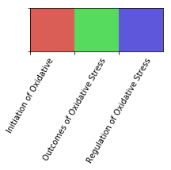
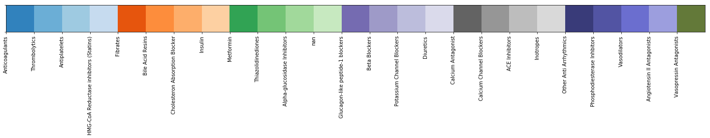
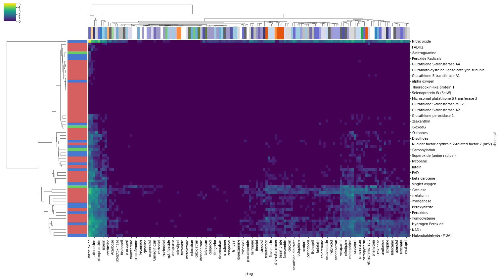

Finding Occurrences of Chemicals and Drugs in PubMed Abstracts
Searches the ElasticSearch index created during CaseOLAP pipeline run for curated list of Drugs and Chemicals related to oxidative stress
Output:
- Chemical_PMID_occurances.csv: CSV table where each row is the occurance of a chemical in PubMed
- Drug_PMID_occurances.csv: CSV table where each row is the occurance of a drug in PubMed
from elasticsearch import Elasticsearch
from elasticsearch_dsl import Search, Q
import pandas as pd
from itertools import product
import seaborn as sns
import numpy as np
import time
import matplotlib.pyplot as plt
import json
import progressbarLoad Drug and Chemical lists, initialize Elastic Search
- Requires elastic search engine to be running on cluster. Must have PMID index
chemical_list_df = pd.read_csv('input/oxidative_stress_chemicals_SA_10222019.csv')
chemical_list_df['Molecule/Enzyme/Protein'] = chemical_list_df['Molecule/Enzyme/Protein'].str.lower().str.strip()chemical_list_df.head()| Biological Events of Oxidative Stress | Molecular and Functional Categories | Molecule/Enzyme/Protein | MeSH Heading | MeSH Supplementary | MeSH tree numbers | Chemical Formula | Examples | Pharm Actions | Tree Numbers | References | |
|---|---|---|---|---|---|---|---|---|---|---|---|
| 0 | Initiation of Oxidative | Reactive Oxygen Species (ROS) | superoxide (anion radical) | Superoxides | NaN | D01.248.497.158.685.750.850; D01.339.431.374.8... | O2- | Superoxide, Hydrogen Peroxide | Oxidants | D27.720.642,\nD27.888.569.540 | PMID: 25547488 |
| 1 | Initiation of Oxidative | Reactive Oxygen Species (ROS) | hydrogen peroxide | Hydrogen Peroxide | NaN | D01.248.497.158.685.750.424; D01.339.431.374.4... | H2O2 | NaN | Anti-Infective Agents, Local | D27.505.954.122.187 | NaN |
| 2 | Initiation of Oxidative | Reactive Oxygen Species (ROS) | NaN | NaN | NaN | NaN | NaN | NaN | Oxidants | D27.720.642,\nD27.888.569.540 | NaN |
| 3 | Initiation of Oxidative | Reactive Oxygen Species (ROS) | hydroxyl (radical) | Hydroxyl Radical | NaN | D01.339.431.249; D01.248.497.158.459.300; D01.... | HO | NaN | Oxidants | D27.720.642,\nD27.888.569.540 | NaN |
| 4 | Initiation of Oxidative | Reactive Oxygen Species (ROS) | alpha oxygen | None listed | NaN | NaN | NaN | NaN | NaN | NaN | NaN |
drug_list_df = pd.read_csv('input/drug_list_SA_10222019.csv')
drug_list_df['Name'] = drug_list_df['Name'].str.lower().str.strip()
drug_list_df.head()| Drug Category | # | Name | Synonyms | MeSH Descriptor | MeSH tree(s) | Common adverse effects | Dosage (freq/amount/time/delivery) | Duration (time) | Pharm Action | ... | Unnamed: 1015 | Unnamed: 1016 | Unnamed: 1017 | Unnamed: 1018 | Unnamed: 1019 | Unnamed: 1020 | Unnamed: 1021 | Unnamed: 1022 | Unnamed: 1023 | Unnamed: 1024 | |
|---|---|---|---|---|---|---|---|---|---|---|---|---|---|---|---|---|---|---|---|---|---|
| 0 | Anticoagulants | 1.0 | heparin | ['Calciparine', 'Eparina', 'heparina', 'Hepari... | heparin | D09.698.373.400 | Thrombocytopenia, Cerebral haemorrhage, Haemog... | 1/18U/kg/iv | 2 days | Anticoagulants, \nFibrinolytic Agents | ... | NaN | NaN | NaN | NaN | NaN | NaN | NaN | NaN | NaN | NaN |
| 1 | Anticoagulants | 2.0 | warfarin | ['4-Hydroxy-3-(3-oxo-1-phenylbutyl)coumarin', ... | warfarin | D03.383.663.283.446.520.914\nD03.633.100.150.4... | Haemorrhage, Haematoma, anaemia, Epistaxis, hy... | 1/2-10mg/day/po | As needed | Anticoagulants, \nRodenticides | ... | NaN | NaN | NaN | NaN | NaN | NaN | NaN | NaN | NaN | NaN |
| 2 | Thrombolytics | 3.0 | streptokinase | ['Streptokinase C precursor'] | streptokinase | D08.811.277.656.300.775\nD12.776.124.125.662.537 | blurred vision, confusion, dizziness, fever, s... | 1/1,500,000 IU/iv | 60min | Fibrinolytic Agents | ... | NaN | NaN | NaN | NaN | NaN | NaN | NaN | NaN | NaN | NaN |
| 3 | Thrombolytics | 4.0 | urokinase | ['U-plasminogen activator', 'uPA', 'Urokinase-... | Urokinase-Type Plasminogen Activator | D08.811.277.656.300.760.910\nD08.811.277.656.9... | bleeding gums, coughing up blood, dizziness, h... | 1/4,000,000U/iv | 10min | NaN | ... | NaN | NaN | NaN | NaN | NaN | NaN | NaN | NaN | NaN | NaN |
| 4 | Thrombolytics | 5.0 | tpa | ['Alteplasa', 'Alteplase (genetical recombinat... | Tissue Plasminogen Activator | D08.811.277.656.300.760.875\nD08.811.277.656.9... | NaN | 1/0.9mg/kg/iv | 60min | Fibrinolytic Agents | ... | NaN | NaN | NaN | NaN | NaN | NaN | NaN | NaN | NaN | NaN |
5 rows × 1025 columns
es = Elasticsearch(timeout=300)Find PMIDs associated with every combination of drugs and chemicals via elastic search
- output file saved to
output/chem_drug_pair_matches.csv
# All combinations of drugs and chemicals
drug_chemicals = product(
drug_list_df['Name'].dropna().unique(),
chemical_list_df['Molecule/Enzyme/Protein'].dropna().unique()
)
matches = pd.DataFrame()
for (drug, chemical) in progressbar.progressbar(drug_chemicals):
mol_matches = {
'PMID': [],
'title': [],
'Year': [],
'Month': []
}
# Match drug and chemical
q = Q("match_phrase", abstract=drug.lower().strip()) & Q("match_phrase", abstract=chemical.lower().strip())
# Search
hits = Search(
using=es,
index="pubmed"
).params(
request_timeout=300
).query(q)
for h in hits.scan():
date_dict = json.loads(h.date.replace("'", '"'))
mol_matches['PMID'].append(h.pmid)
mol_matches['title'].append(h.title)
mol_matches['Year'].append(date_dict['Year'])
mol_matches['Month'].append(date_dict['Month'])
match_df = pd.DataFrame.from_dict(mol_matches)
match_df['drug'] = drug.lower().strip()
match_df['chemical'] = chemical.lower().strip()
matches = matches.append(match_df)
matches.head()| | # | 21059 Elapsed Time: 0:13:02| PMID | title | Year | Month | drug | chemical | |
|---|---|---|---|---|---|---|
| 0 | 8376590 | Homocysteine, a thrombogenic agent, suppresses... | 1993 | Sep | heparin | hydrogen peroxide |
| 1 | 25037421 | Degradation of fucoidans from Sargassum fulvel... | 2014 | Oct | heparin | hydrogen peroxide |
| 2 | 14561655 | Role of hydrogen peroxide in sperm capacitatio... | 2004 | Feb | heparin | hydrogen peroxide |
| 3 | 9040037 | Protective effect of dextran sulfate and hepar... | 1997 | Jan | heparin | hydrogen peroxide |
| 4 | 10547607 | Heparin-binding EGF-like growth factor is expr... | 1999 | Nov | heparin | hydrogen peroxide |
matches.to_csv('output/chem_drug_pair_matches.csv', index=False)matches = pd.read_csv('output/chem_drug_pair_matches.csv')Plotting Drug, chemical co-occurence heatmap
- colors used to show category of drug, and oxidative stress category association of chemicals
chem_name_cats = chemical_list_df[['Molecule/Enzyme/Protein', 'Biological Events of Oxidative Stress']]\
.drop_duplicates().rename(columns={
'Molecule/Enzyme/Protein': 'chemical',
'Biological Events of Oxidative Stress':'chem_cat'
}).dropna()
drug_name_cats = drug_list_df[['Name', 'Drug Category']]\
.drop_duplicates().rename(columns={
'Name': 'drug',
'Drug Category': 'drug_cat'
}).dropna()
with_cats_matches = matches.merge(
chem_name_cats,
how='left',
validate='m:m'
)
with_cats_matches = with_cats_matches.merge(
drug_name_cats,
how='left',
validate='m:m'
)
print(matches.dropna().shape, with_cats_matches.dropna().shape)
with_cats_matches.head()(199479, 6) (204265, 8)| PMID | title | Year | Month | drug | chemical | chem_cat | drug_cat | |
|---|---|---|---|---|---|---|---|---|
| 0 | 8376590 | Homocysteine, a thrombogenic agent, suppresses... | 1993.0 | Sep | heparin | hydrogen peroxide | Initiation of Oxidative | Anticoagulants |
| 1 | 25037421 | Degradation of fucoidans from Sargassum fulvel... | 2014.0 | Oct | heparin | hydrogen peroxide | Initiation of Oxidative | Anticoagulants |
| 2 | 14561655 | Role of hydrogen peroxide in sperm capacitatio... | 2004.0 | Feb | heparin | hydrogen peroxide | Initiation of Oxidative | Anticoagulants |
| 3 | 9040037 | Protective effect of dextran sulfate and hepar... | 1997.0 | Jan | heparin | hydrogen peroxide | Initiation of Oxidative | Anticoagulants |
| 4 | 10547607 | Heparin-binding EGF-like growth factor is expr... | 1999.0 | Nov | heparin | hydrogen peroxide | Initiation of Oxidative | Anticoagulants |
with_cats_matches.chem_cat.unique()array(['Initiation of Oxidative', 'Outcomes of Oxidative Stress',
'Regulation of Oxidative Stress'], dtype=object)# Creating color palettes to label drug and chemical categories
chems = with_cats_matches.chem_cat.unique()
chem_pal = sns.color_palette("hls", n_colors=with_cats_matches.chem_cat.nunique())
chem_pal_dict = dict(zip(chems, chem_pal))
drugs = with_cats_matches.drug_cat.unique()
drug_pal = sns.color_palette("tab20c", n_colors=with_cats_matches.drug_cat.nunique())
drug_pal[-5:] = sns.color_palette("tab20b", n_colors=5)
drug_pal_dict = dict(zip(drugs, drug_pal))
with_cats_matches['chem_color'] = with_cats_matches.chem_cat.map(chem_pal_dict)
with_cats_matches['drug_color'] = with_cats_matches.drug_cat.map(drug_pal_dict)
sns.palplot(chem_pal)
plt.gca().set_xticklabels(chems)
plt.xticks(rotation=60)
sns.palplot(drug_pal)
plt.gca().set_xticklabels(drugs)
plt.xticks(rotation=90);

## Save Color Palettes
with open('drug_cat_palette.json', 'w') as fp:
json.dump(drug_pal_dict, fp)
with open('chem_cat_palette.json', 'w') as fp:
json.dump(chem_pal_dict, fp)# Set NaN category color to white
with_cats_matches.loc[with_cats_matches.drug_color.isna(), 'drug_color'] = "white"# Count articles per drug-chemical co-occurrence
article_count = pd.DataFrame(
with_cats_matches.groupby(['drug', 'chemical', 'drug_cat', 'chem_cat']).PMID.nunique()
).reset_index().rename(columns={'PMID': 'Article Count'})
article_count['log_count'] = np.log10(article_count['Article Count'])
chem_colors_df = with_cats_matches[['chemical', 'chem_color']].drop_duplicates()
chem_colors = [chem_colors_df[chem_colors_df.chemical == chem].chem_color.unique()[0] for chem in piv_count.index]
drug_colors_df = with_cats_matches[['drug', 'drug_color']].drop_duplicates()
drug_colors = [drug_colors_df[drug_colors_df.drug == drug].drug_color.unique()[0] for drug in piv_count.columns]
piv_count = article_count.pivot_table(
index='chemical',
columns='drug',
values='log_count',
fill_value=0
)
sns.clustermap(
piv_count,
figsize=(22,13),
cmap='viridis',
row_colors=chem_colors,
col_colors=drug_colors
)<seaborn.matrix.ClusterGrid at 0x7ff7afcb4898>
Find PMIDS assocaited with drugs via elastic search
- Searches abstracts for drug names or synonyms of drug names
- Finds number of occurances of drug name or synonyms in abstract
Saves to output/Drug_PMID_occurances.csv
drug_matches = pd.DataFrame()
tot = drug_list_df.Name.nunique()
for (drug, synonyms, category), m_df in progressbar.progressbar(drug_list_df.groupby(['Name', 'Synonyms', 'Drug Category'])):
drug_match = {
'PMID': [],
'title': [],
'MeSH': [],
'count': [],
'Year': [],
'Month': []
}
synonyms = synonyms.split(', ')
drug = drug.lower()
q = Q('match_phrase', abstract=drug)
if synonyms:
synonyms = [s.lower() for s in synonyms]
for s in synonyms:
q = q | Q('match_phrase', abstract=s)
hits = Search(
using=es,
index="pubmed"
).query(q)
for h in hits.scan():
date_dict = json.loads(h.date.replace("'", '"'))
drug_match['PMID'].append(h.pmid)
drug_match['title'].append(h.title)
drug_match['MeSH'].append(h.MeSH)
drug_match['Year'].append(date_dict['Year'])
drug_match['Month'].append(date_dict['Month'])
entity_count = 0
for phrase in [drug] + synonyms:
entity_lower = phrase.lower().replace("-", " ")
entity_count += abs_lower.count(entity_lower)
drug_match['count'].append(entity_count)
drug_match_df = pd.DataFrame.from_dict(drug_match)
drug_match_df['drug'] = drug
drug_match_df['category'] = category
drug_matches = drug_matches.append(drug_match_df)
drug_matches.head()100% (161 of 161) |######################| Elapsed Time: 0:37:59 Time: 0:37:59| PMID | title | MeSH | count | Year | Month | drug | category | |
|---|---|---|---|---|---|---|---|---|
| 0 | 24853116 | Acarbose monotherapy and weight loss in Easter... | [Acarbose, therapeutic use, Asian Continental ... | 0 | 2014 | Nov | acarbose | Alpha-glucosidase Inhibitors |
| 1 | 24863354 | Comparative evaluation of polysaccharides isol... | [Asteraceae, chemistry, Astragalus Plant, chem... | 0 | 2014 | Apr | acarbose | Alpha-glucosidase Inhibitors |
| 2 | 24866329 | Effects of sitagliptin or mitiglinide as an ad... | [Acarbose, therapeutic use, Aged, Asian Contin... | 0 | 2014 | Jul | acarbose | Alpha-glucosidase Inhibitors |
| 3 | 12918894 | Nateglinide (Starlix): update on a new antidia... | [Blood Glucose, physiology, Cyclohexanes, phar... | 0 | acarbose | Alpha-glucosidase Inhibitors | ||
| 4 | 20568489 | Digoxin: serious drug interactions. | [Digoxin, adverse effects, blood, Drug Interac... | 0 | 2010 | Apr | acarbose | Alpha-glucosidase Inhibitors |
drug_matches.to_csv('output/Drug_PMID_occurances.csv', index=False)
drug_matches.shape(2702853, 8)drug_category_PMID_count = pd.DataFrame(drug_matches.groupby('category').PMID.nunique()).reset_index()
drug_category_PMID_count| category | PMID | |
|---|---|---|
| 0 | ACE Inhibitors | 70299 |
| 1 | Alpha-glucosidase Inhibitors | 2008 |
| 2 | Angiotensin II Antagonists | 16230 |
| 3 | Anticoagulants | 80628 |
| 4 | Antiplatelets | 82006 |
| 5 | Beta Blockers | 949488 |
| 6 | Bile Acid Resins | 2459 |
| 7 | Calcium Antagonist | 47735 |
| 8 | Calcium Channel Blockers | 25446 |
| 9 | Cholesteron Absorption Blocker | 2554 |
| 10 | Diuretics | 28829 |
| 11 | Fibrates | 12214 |
| 12 | Glucagon-like peptide-1 blockers | 5180 |
| 13 | HMG-CoA Reductase inhibitors (Statins) | 22166 |
| 14 | Inotropes | 246382 |
| 15 | Insulin | 7386 |
| 16 | Metformin | 16564 |
| 17 | Na Channel Blockers | 42512 |
| 18 | Other Anti Arrhythmics | 130224 |
| 19 | Phosphodiesterase Inhbitors | 21894 |
| 20 | Potassium Channel Blockers | 10292 |
| 21 | Sulfonylureas | 12331 |
| 22 | Thiazolidinediones | 5089 |
| 23 | Thrombolytics | 309306 |
| 24 | Vasodilators | 408803 |
| 25 | Vasopressin Antagonists | 850 |
Searching for PMIDs associated with each chemical
- If there is a MeSH id, searches pubmed index for abstract containing drug name OR MeSH terms containin mesh term
- If there is no MeSH id, only searches for drug name in abstract
saves to output/Chemical_PMID_occurances.csv
has_data_df = chemical_list_df[
(~chemical_list_df['Molecule/Enzyme/Protein'].isnull()) |
(~chemical_list_df['MeSH Heading'].isnull())
]
chem_matches_df = pd.DataFrame()
for (name, mesh, category), m_df in progressbar.progressbar(has_data_df.groupby(['Molecule/Enzyme/Protein', 'MeSH Heading', 'Biological Events of Oxidative Stress'])):
hit_dict = {
'PMID': [],
'Article MeSH': [],
'Year': [],
'Month': [],
}
if mesh.lower() == 'none listed':
q = Q('match_phrase', abstract=name.lower())
else:
q = Q('match_phrase', abstract=name.lower()) | Q('match_phrase', MeSH=mesh)
hits = Search(
using=es,
index="pubmed"
).params(
request_timeout=300
).query(q)
for h in hits.scan():
date_dict = json.loads(h.date.replace("'", '"'))
hit_dict['PMID'].append(h.pmid)
hit_dict['Article MeSH'].append(h.MeSH)
hit_dict['Year'].append(date_dict['Year'])
hit_dict['Month'].append(date_dict['Month'])
hit_df = pd.DataFrame.from_dict(hit_dict)
hit_df['category'] = category
hit_df['chemical'] = name
hit_df['MeSH'] = mesh
chem_matches_df = chem_matches_df.append(hit_df)
chem_matches_df.head()100% (157 of 157) |######################| Elapsed Time: 0:44:52 Time: 0:44:52| PMID | Article MeSH | Year | Month | category | chemical | MeSH | |
|---|---|---|---|---|---|---|---|
| 0 | 24852702 | [Alcohols, metabolism, toxicity, Aldehydes, me... | 2014 | Sep | Initiation of Oxidative | 4-hydroxy-2-nonenal (4-HNE) | Aldehydes |
| 1 | 24854020 | [Adult, Aldehydes, metabolism, Case-Control St... | 2015 | Apr | Initiation of Oxidative | 4-hydroxy-2-nonenal (4-HNE) | Aldehydes |
| 2 | 24854122 | [Acetylcysteine, pharmacology, Aldehydes, phar... | 2014 | Nov | Initiation of Oxidative | 4-hydroxy-2-nonenal (4-HNE) | Aldehydes |
| 3 | 24877583 | [4-Butyrolactone, chemistry, Aldehydes, chemis... | 2014 | Jun | Initiation of Oxidative | 4-hydroxy-2-nonenal (4-HNE) | Aldehydes |
| 4 | 24878441 | [Absorption, Physicochemical, Acetonitriles, c... | 2014 | Nov | Initiation of Oxidative | 4-hydroxy-2-nonenal (4-HNE) | Aldehydes |
chem_matches_df.to_csv('output/Chemical_PMID_occurances.csv', index=False)
chem_matches_df.shape(3291433, 7)